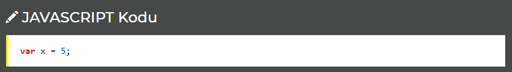
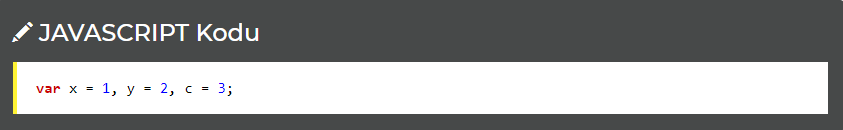

(Variables) Değişkenler, değeleri saklayabileceğiniz kaplardır. Bir değişkeni tanımlamaya var anahtar kelimesi kullanarak başlarsınız, ardından da değişkene vermek istediğiniz ismi yazarsınız.
•Yeni bir değişken tanımlarken "var" komutundan faydalanırız. Örneğin sayısal bir ifade olarak 5 (beş) verisi içeren x adında bir değişken oluşturmak için:
Yukarıda tanımladığımız x bir değişkendir ve değeri 5'dir.
•Tek bir "var" kullanarak birden fazla değişken oluşturabiliriz, bunun için tanımlanan değişkenler arasında virgül (,) konulur:
•Değişken adları mutlaka A-Z ya da a-z aralığında bir harf ile başlar, sayı ile başlayamaz.
•Değişkenler bazı durumlarda $ ya da _ ile de başlayabilir..
•Değişken adları büyük - küçük harf duyarlıdır. Yani var x = 5 ile var X = 5 farklı değişkenlerdir.
***Aşağıdaki örnekte sayi1, sayi2 ve toplam birer değişkendir.
örneği inceleUyarı: Kodu incelemek için örneği incele dedikten sonra CTRL+U tuşuna basınız
***Değişkenleri virgül ile ayırarak yan yana tanımlayabiliriz:
örneği inceleUyarı: Kodu incelemek için örneği incele dedikten sonra CTRL+U tuşuna basınız